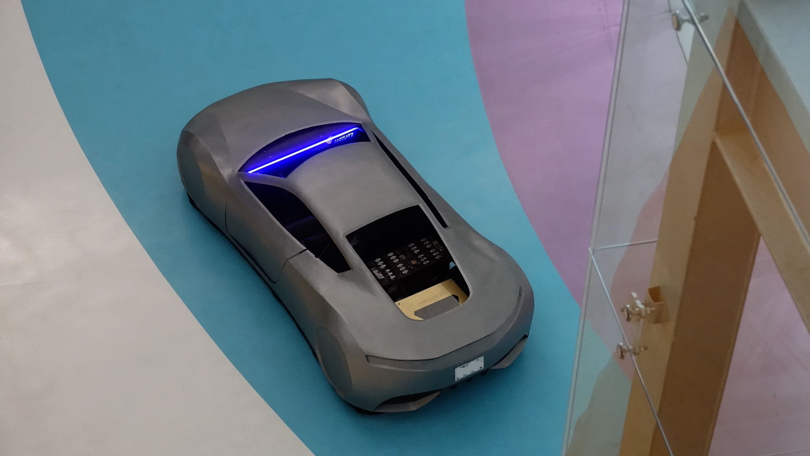

6 de febrero, 2022
"El diseño [...] simple hace que sea muy eficiente, que no requiera mantenimiento y sea muy fácil para el usuario" [41:15]

17 de enero, 2022
"La clave del diseño de ANSSATZ es su simplicidad [...]. El diseño promete darle al vehículo la capacidad de moverse omnidireccionalmente y, en los próximos años, la habilidad de manejarse sólo."